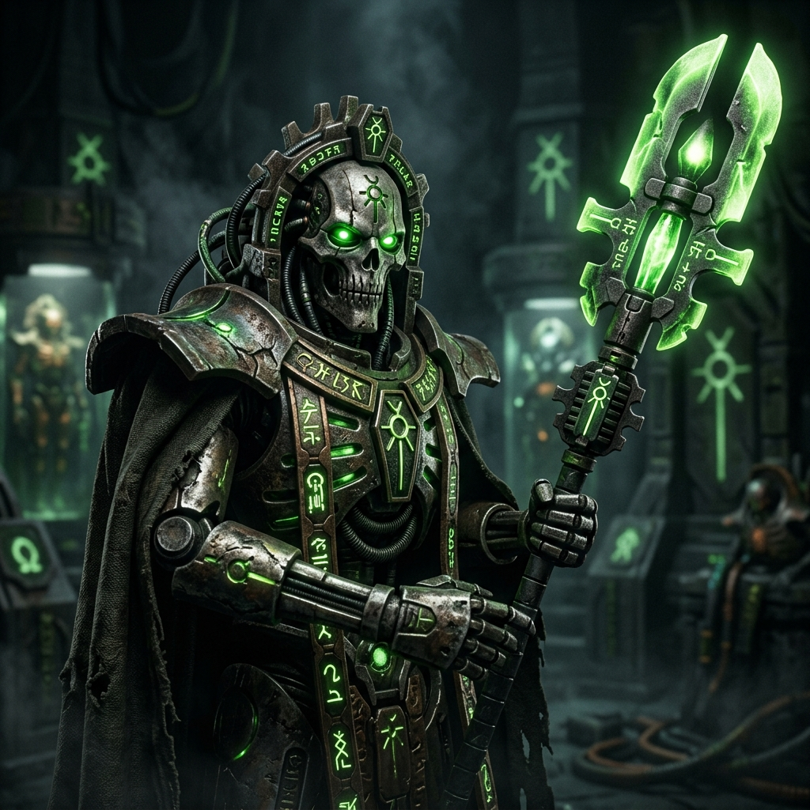
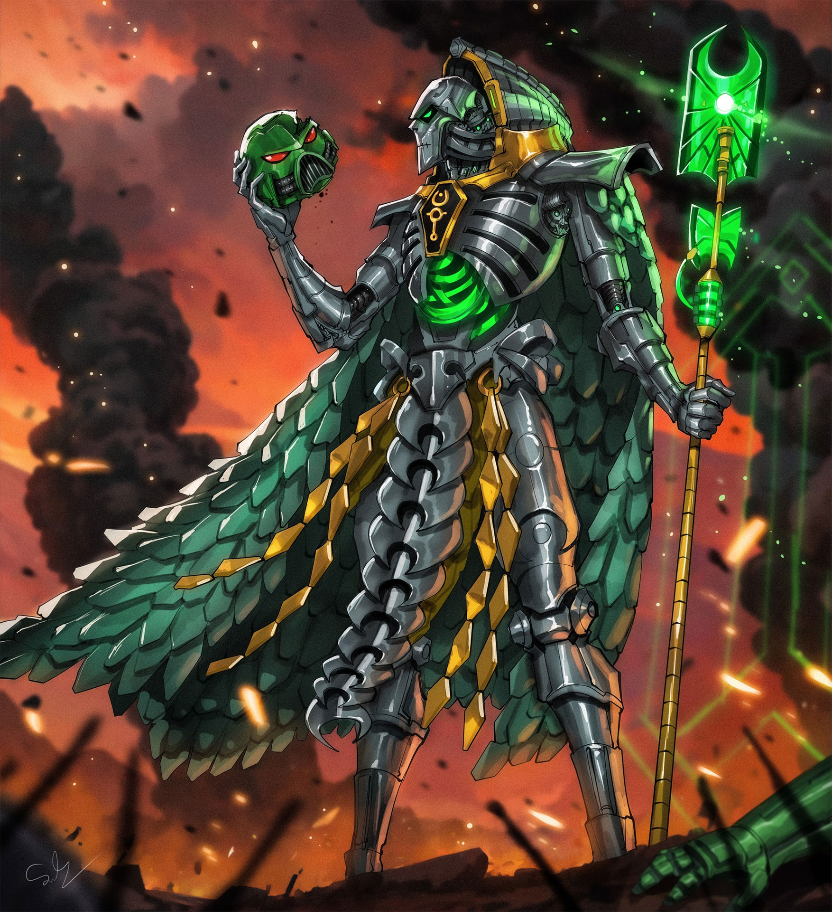
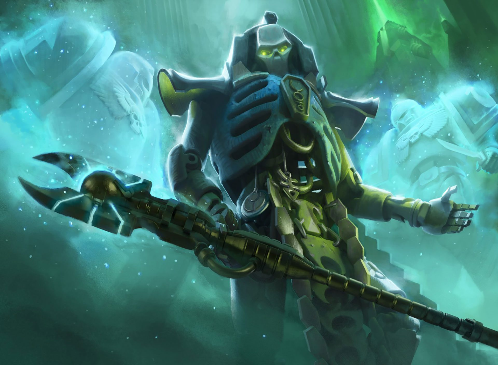

TRAZYN, O INFINITO
Lorde Suserano (Overlord) de Solemnace • Arqueo-tecnólogo • O Grande Colecionador

Origem
Entre a nobreza amarga e sem alma da raça Necron, Trazyn, o Infinito, é uma anomalia excêntrica. Diferente de líderes como Imotekh, que buscam a reconquista da galáxia pela força brutal, Trazyn tem uma obsessão singular: a preservação do passado, da história e de artefatos valiosos, não importando a quem pertençam.
Como o Governante Supremo do Mundo-Tumba de Solemnace, ele converteu seu planeta inteiro em um museu gigantesco, as Galerias Prismáticas. Lá, congelados no tempo através de campos de estase hiperavançados, ele guarda dioramas vivos de eventos históricos da galáxia, compostos por soldados imperiais reais, tiranidas, aeldaris e até mesmo irmãos Necrons.
Seus métodos para expandir a coleção vão de escavações arqueológicas pacíficas até a aniquilação completa de frotas inimigas que se recusam a "doar" seus relíquias. A linha entre preservação histórica e cleptomania é inexistente para Trazyn; se um item, uma arma lendária ou um herói chama a sua atenção, aquele espécime eventualmente será capturado e classificado em Solemnace.

Credo de Guerra
"Eles chamam isso de roubo. Eu chamo de curadoria. O que eles usariam para se matar de forma bárbara hoje, eu preservarei para que as eras futuras possam admirar. A gratidão virá depois."
Trazyn não entra em guerra por ódio ou política; ele entra em guerra por aquisição. Ele raramente arrisca seu "corpo original" de necroderme, preferindo baixar sua consciência para o corpo de outros Necrons na linha de frente — um truque chamado Subjugação Mnemônica.
Quando ele marcha para o combate, usa labirintos Tesseract, prisões dimensionais portáteis, para capturar imediatamente qualquer monstro ou herói que desperte seu interesse, às vezes abandonando a própria batalha no meio se o prêmio já foi assegurado.
Por causa do seu vasto arsenal de relíquias roubadas e conhecimentos ancestrais preservados, Trazyn pode ser imprevisível. Durante a queda de Cadia, a sua intervenção soltando coleções inteiras (inclusive tropas do Império) de seus labirintos tesseract atrasou significativamente o Caos, mostrando que suas ações dependem inteiramente do valor que ele vê nos eventos que se desenrolam.
Capacidade Bélica
- O Obliterador Empático (Empathic Obliterator): Um cajado ancestral terrível que, ao abater um inimigo, envia uma onda psíquica letal que mata todos que pensam igual ou se aliam à mente da vítima.
- Labirintos Tesseract: Cubos brilhantes capazes de encurralar exércitos inteiros, demônios ou monstros monstruosos e mantê-los suspensos em bolsões além do tempo e do espaço.
- Manto Mnemônico (Subjugator): A qualquer sinal de perigo extremo, Trazyn descarta seu corpo atual e transfere sua mente instantaneamente para o corpo de qualquer Lychguard ou lorde necron nas proximidades, tornando-o imortal mesmo para os padrões Necrons.
- Manoplas Absorvedoras: Artefatos em seus braços que desintegram tecnologia ou feitiçaria direcionada a ele.
- Exército de Reserva: Em caso de desespero, Trazyn frequentemente libera peças indesejadas de seu museu no campo de batalha — soltando desde Tyranids famintos até antigos Space Marines traidores no meio dos seus inimigos para criar confusão.
Localização Atual: Viajando pela galáxia em cruzadas "arqueológicas", com base no Mundo-Tumba de Solemnace.
Status: Ativo - Catalogando os estragos da Grande Fenda e roubando artefatos das novas frentes de batalha.
